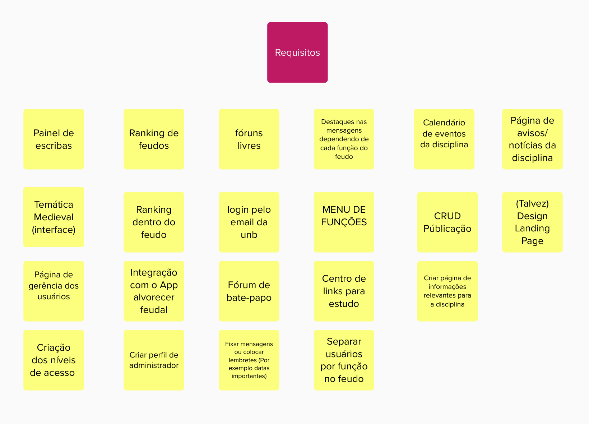
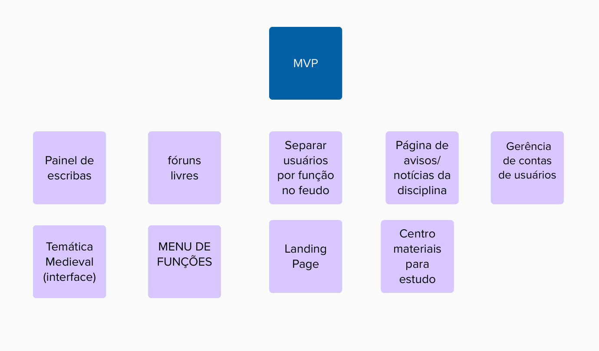

Requisitos do Software
Elicitação dos Requisitos
Para a elicitação dos requisitos, foi realizada a técnica de Brainstorming com todos os integrantes do grupo, afim de elicitar uma grande quantidade de possíveis requisitos para o software.
O resultado da elicitação pode ser encontrado abaixo: 
Priorização dos Requisitos - MVP
Após a elicitação, os requisitos foram priorizados levando em consideração o escopo, prazo e nível de importância para a aplicação, com o objetivo de se alcançar um MVP (Minimal Viable Product) à partir dos requisitos previamente elicitados.
O resultado da priorização pode ser encontrado abaixo:

Product Backlog
Após a priorização dos requisitos, foi criado o Product Backlog, que pode ser encontrado abaixo:
| Req | Descrição |
|---|---|
| REQ01 | O sistema deve permitir a gerência de contas de usuários |
| REQ02 | O sistema deve fornecer uma página para fórum livre |
| REQ03 | O sistema deve fornecer uma página para atualizações dos escribas |
| REQ04 | O sistema deve fornecer uma página para avisos e notícias da disciplina |
| REQ05 | O sistema deve fornecer uma página para materiais de estudos |
| REQ06 | O sistema deve possuir uma landing page |
| REQ07 | O sistema deve possuir um menu de navegação |
| REQ08 | A interface do sistema deve possuir uma temática medieval |
| REQ09 | O sistema deve ser capaz de atribuir o papel de cada usuário (cavaleiro, duque, monarca e conselheiro) |
Protótipo de alta fidelidade
O protótipo de alta fidelidade que desenvolvemos para o nosso site, como parte da disciplina de Design de Sistemas da Universidade de Brasília (UnB), é o resultado de um trabalho meticuloso e dedicado. Esse protótipo representa uma simulação precisa do nosso site, incorporando todos os detalhes visuais e funcionais necessários para proporcionar uma experiência de usuário autêntica, intuitiva, eficiente e visualmente atraente. O protótipo de alta fidelidade é uma etapa crucial no processo de design, permitindo-nos testar e aprimorar a usabilidade do site antes da implementação, garantindo que ele atenda às necessidades e expectativas de nossos usuários.
As seguintes telas foram contempladas:
- Home Page
- Login Page
- Password Reset Page
- Forum Page
- News Page
- Informations Page
- Topic Page
Essas telas possibilitam a execução das seguintes ações:
- Ações da tela inicial
- Criação de um usuário para login
- Recuperar a senha
- Realizar postagens
- Atualizar postagens
- Remover postagens
- Acesso a página de novidades
- Acesso a página de informações
- Acesso a página geral como novos tópicos
Home Page

Login Page

Password Reset Page

Forum Page

News Page

Informations Page
Topic Page